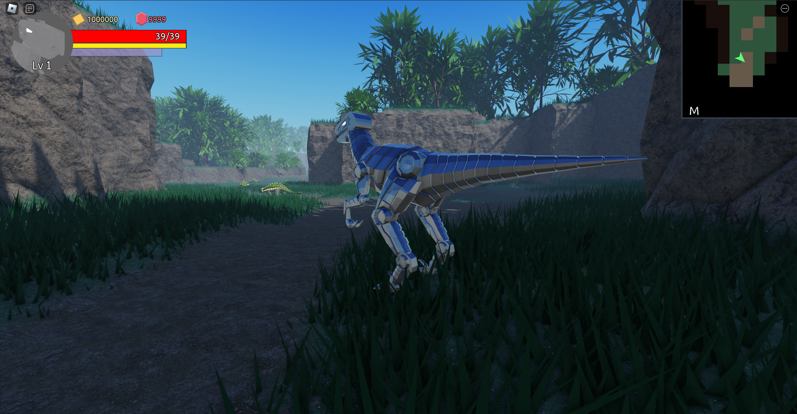

12/18/2022
During my game development experience, the part of the game I struggle the most by far is the maps. I dumped hours into getting better with blender, but I still struggle with putting assets together to make a realistic and beautiful scene. To get around this weakness, I decided to try making a random map generator to randomly create dungeon layouts.
The code for this is all in a Roblox save file, so I am unable to upload it to github, but I will explain each step of the generation.
After looking for random dungeon generation algorithms, I quickly stumbled upon an article that uses cellular automation to randomly generate caves. It had a comprehensive step by step tutorial on how it works and I was able to follow along and convert the code to Lua for Roblox. The article also covered treasure placements in secluded areas of the map. Although the article was more targeted for 2d cave levels, I decided it was a good start for my purposes. I followed this article to implement cellular automation and added some extra steps to more suit the map to be a dungeon.
I won’t go into details on how cellular automation works, but I will talk about the steps I took after the base dungeon was created.
I put all the dungeon generation code into a class called IDungeon, which dungeon classes were meant to inherit from. I intended the dungeon classes to contain information like the enemies found, decorations to put down, rewards, etc. After cellular automation, the grid is left with multiple pockets, with some being separated from others. I used flood fill to determine the largest pocket and used that for the dungeon, clearing the rest. In this step, it also determines open spaces that are big enough for spawn locations and high enemy density. At the end, there is a quality check to make sure that the dungeon has enough space for spawn locations and enemies, as well as if it’s big enough. When the terrain for the level is generated, it only places terrain in grid squares less than 3 tiles away from the closest playable tile. Generating terrain from the grid is by far the slowest part of the dungeon creation.
After getting a suitable dungeon map, it finds the two open spaces that are furthest from each other and places the start and end points at those locations. Depending on a difficulty modifier IDungeon gets from the dungeon that inherits it, IDungeon sets enemy spawns around with a certain density, with more spawns focused in the open areas.
Terrain is filled in with the areas of the grid that are alive being the playable area and the dead cells have elevated terrain and act as the borders of the dungeon. There are 3 categories of decorations that the dungeon takes into account. There are floor decorations that don’t obstruct vision or movement such as a patch of flowers. These decorations are able to smoothly go anywhere in the dungeon. The second type is decorations that are a bit larger and can obstruct vision such as a bush or a rock. These decorations look unnatural if placed in the middle of an open field, but natural if placed near the edges of the playable area. The third type is large decorations like trees. These decorations are placed exclusively outside of playable areas. For design purposes, the large decorations scale up in size based on how far from the playable area they are.
When I moved the code into Mecha Raptor Simulator, I rewrote it to be neater. It now generates the cell map, fills in decoration, and runs the dungeon in three different functions. In Mecha Raptor Simulator, the dungeon also is given a non-uniform height using perlin noise with non-playable areas being more sensitive and areas away from walls being lower by default.
The biggest addition when moving to Mecha Raptor Simulator was the addition of a minimap. The minimap represents each tile of the map with a frame that is either black or the color of the terrain in that grid square. It has an expanded view where it shows the whole map and a collapsed view where it only shows the immediate area around the player. It took a surprising amount of trigonometry to map the direction the player is facing in 3d space to 2d space on the minimap.
I attempted to implement this random dungeon generator into multiple games, but I couldn’t find a game that I was satisfied with. Remaking the dungeon generator in Mecha Raptor Simulator allowed me to take the dungeons a step further and make the dungeons more exciting to be in. Although I was never able to find a way to cleanly implement this random map generator into a game, I still found it exciting and satisfying to make. I have no plans to put randomly generated maps in games. Instead, I will try to get better at making my own maps and scenes.